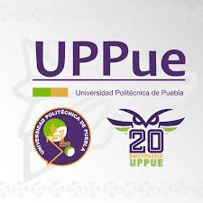

Universidad Politécnica De Puebla es una institución de formación profesional, con presencia según matrículas en 2022 en Puebla (2,058), centrando la mayor parte del estudiantado en los municipios de Juan C. Bonilla (2,058). En 2022, Universidad Politécnica De Puebla tuvo 2,058 matriculados, de los cuales 63.7% (1.31k) fueron hombres y 36.3% (748) fueron mujeres. En 2022, la institución tuvo 345 egresados, de estos 194 fueron hombres y 151 mujeres. Las áreas con más egresados fueron Ingeniería, manufactura y construcción (163), Ciencias naturales, matemáticas y estadística (75) y Administración y negocios (63). El mismo año, Universidad Politécnica De Puebla, tuvo 8 graduados, de estos 6 fueron hombres y 2 mujeres. Las áreas con más alumnos graduados fueron Ingeniería, manufactura y construcción (7) y Educación (1). Esta institución tuvo 257 titulados, de estos 162 fueron hombres y 95 mujeres, y siendo las áreas con más estudiantes titulados Ingeniería, manufactura y construcción (139), Ciencias naturales, matemáticas y estadística (48) y Administración y negocios (38).
